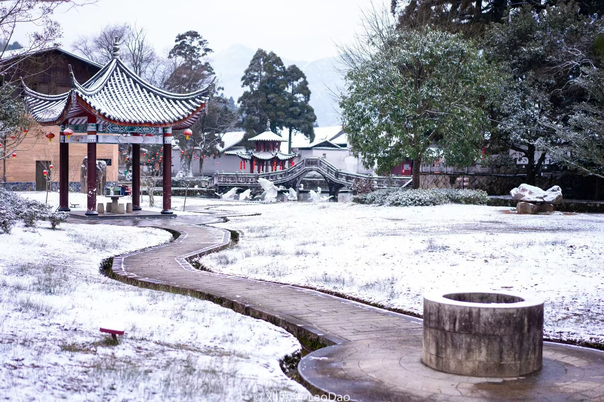
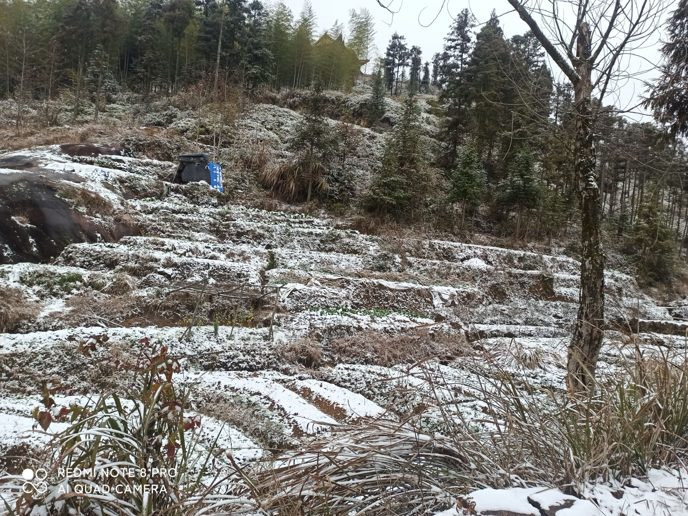
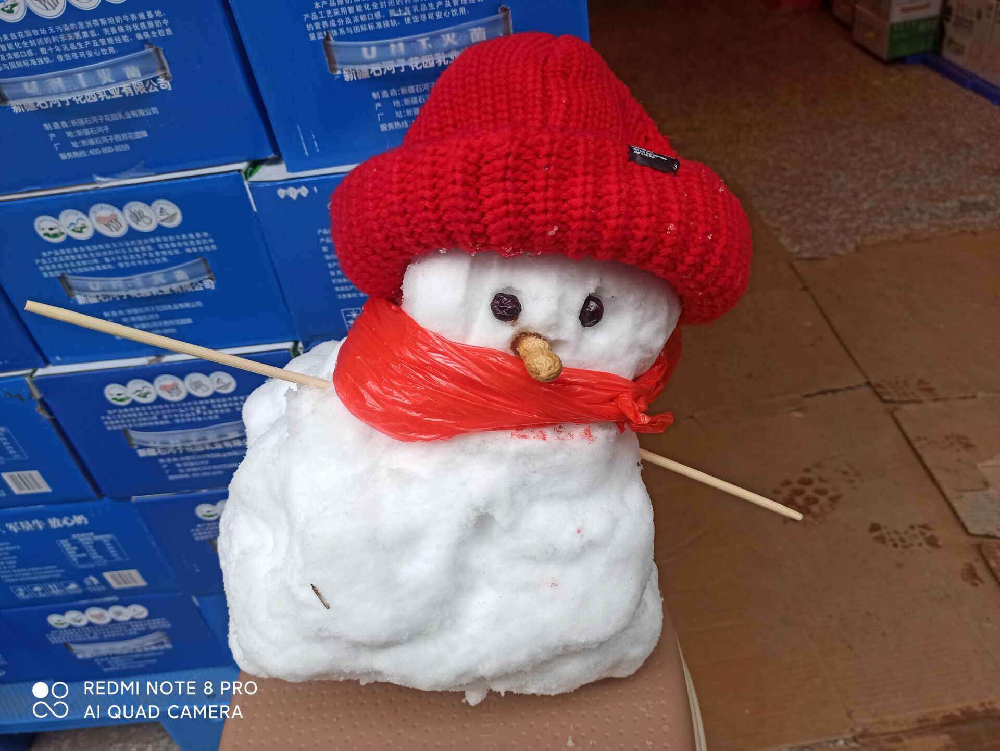
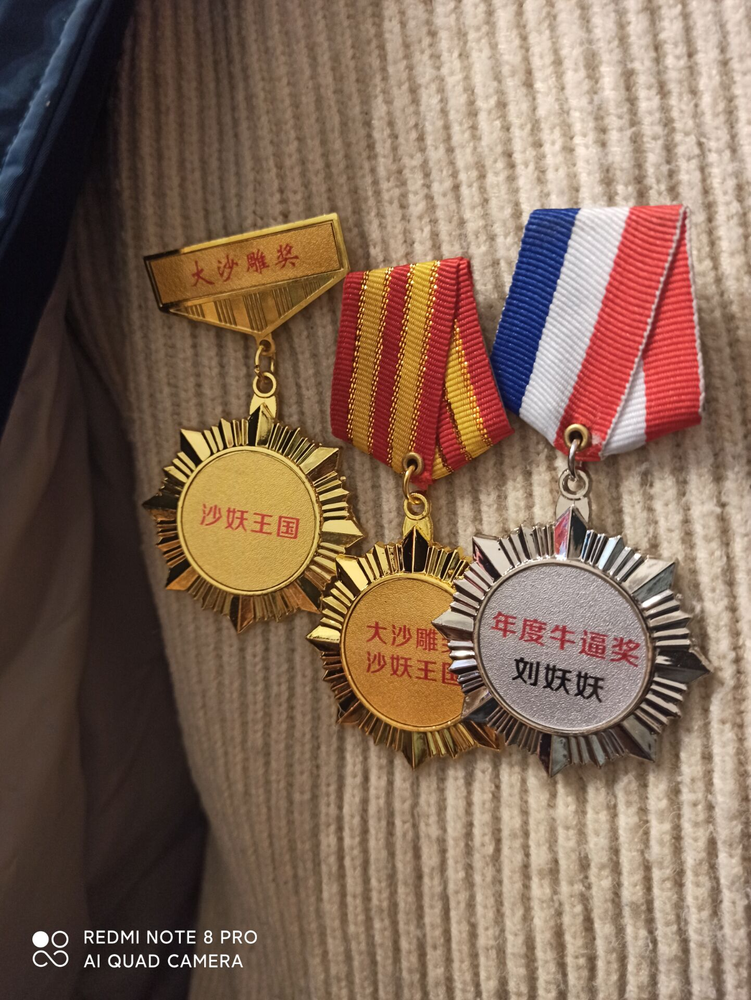

第一次下雪和加入微型联合国
返回
第一次下雪
沙妖国作为中国南部的国家，下雪是非常难见的。2022年2月29日早上3点，下雪了，晚上也有下雪。这次下雪刚好是周日，只不过这场雪来迟了两三个月。借着这次下雪我们好好庆祝了一番。国王殿下还堆了一个丑陋的雪人放置在店仓飞地的店区
我们还在2022年2月19日晚上，加入了微型联合国。这代表这我们在微型私人国家中有着一定的影响力，让沙妖国成为了一个正式的微型私人国家。
国王戴勋章亲祝
无论你是哪一个头衔我们都会尊敬你。